: a quarter-wave plate (
: a quarter-wave plate (Polarisation states
Write the transverse field as
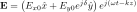
(Jones vector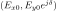
) (Jones 1941).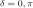
: linear;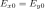
,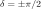
: circular; otherwise elliptical. Unpolarised light is a random mixture: an ideal polariser passes half of it.Malus's law and polarisers
A polariser projects the field onto its axis:
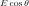
, so . Polarisers: dichroic sheets (Polaroid, absorb one component), Brewster stacks (reflect s, transmit p), birefringent prisms (Glan–Thompson, Wollaston), wire grids.
. Polarisers: dichroic sheets (Polaroid, absorb one component), Brewster stacks (reflect s, transmit p), birefringent prisms (Glan–Thompson, Wollaston), wire grids.
Birefringence
In an anisotropic crystal  is a tensor; in a uniaxial crystal (calcite, quartz, LiNbO
is a tensor; in a uniaxial crystal (calcite, quartz, LiNbO ) one axis (optic axis) differs. A wave with
) one axis (optic axis) differs. A wave with
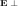
optic axis sees (ordinary); the orthogonal one sees , with
(ordinary); the orthogonal one sees , with  the angle between
the angle between 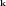
and the optic axis (formula in the summary). Positive crystal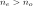
(quartz 1.553/1.544), negative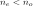
(calcite 1.486/1.658). Off-axis a single ray splits into two (double refraction).Picture: a quarter-wave plate
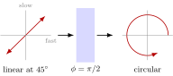
Wave plates (derivation)
Decompose the input on the fast and slow axes. After thickness  the slow component lags by
the slow component lags by
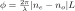
. Quarter wave: ; equal components (input at 45°) become
; equal components (input at 45°) become 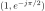
: circular. Half wave: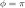
flips the sign of the slow component: linear light at to the fast axis exits at
to the fast axis exits at 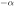
, a rotation by . A zero-order plate has the smallest ; multi-order plates (
. A zero-order plate has the smallest ; multi-order plates (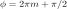
) are thicker but very sensitive to and temperature.
and temperature.
Optical activity, Faraday effect and isolators
Optically active media (quartz along its axis, sugar solutions) rotate linear polarisation by
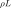
, the same sense for both directions. The Faraday effect rotates by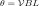
(Verdet constant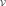
) and is non-reciprocal: on the way back the rotation adds. A 45° Faraday rotator between two polarisers at 45° to each other passes light forward and blocks the reflection (rotated to 90°): the optical isolator that protects lasers from feedback.Worked examples
- Three polarisers: unpolarised
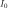
through polarisers at 0°, 45°, 90°: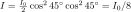
; without the middle one, zero. - Quartz quarter-wave plate at 633 nm (
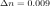
):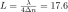
µm (half-wave: 35.2 µm). Calcite (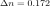
) would need 0.92 µm: too thin to handle, so calcite is used for polarisers, quartz and mica for plates. - Calcite at
 from the optic axis:
from the optic axis: 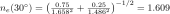
. - Faraday rotator in TGG (
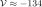
rad T m at 633 nm) with 1 T: 45° needs
m at 633 nm) with 1 T: 45° needs 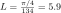
mm.
Engineering applications
LCD screens (twisted nematic cell between crossed polarisers rotates the light by 90° when off), 3D cinema (circular polarisation), optical isolators and circulators, polarisation-maintaining fibres (stress birefringence), Pockels cells (voltage-controlled wave plates), ellipsometry, stress analysis by photoelasticity, polarisation-mode dispersion in fibres.
Exam-style exercise
Linearly polarised light at 633 nm, at 30° to the fast axis, crosses a quartz plate 35.2 µm thick. (a) What is the plate? (b) Output polarisation. (c) An analyser at 90° to the input: transmitted fraction?
Solution
(a)
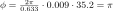
: half-wave plate. (b) Linear, at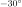
to the fast axis, i.e. rotated by 60°. (c) Angle between output and analyser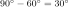
: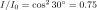
.Pitfall
A half-wave plate rotates by twice the angle between the input and its axis, not by 90°; and a quarter-wave plate gives circular light only if the input is at exactly 45°, otherwise elliptical.